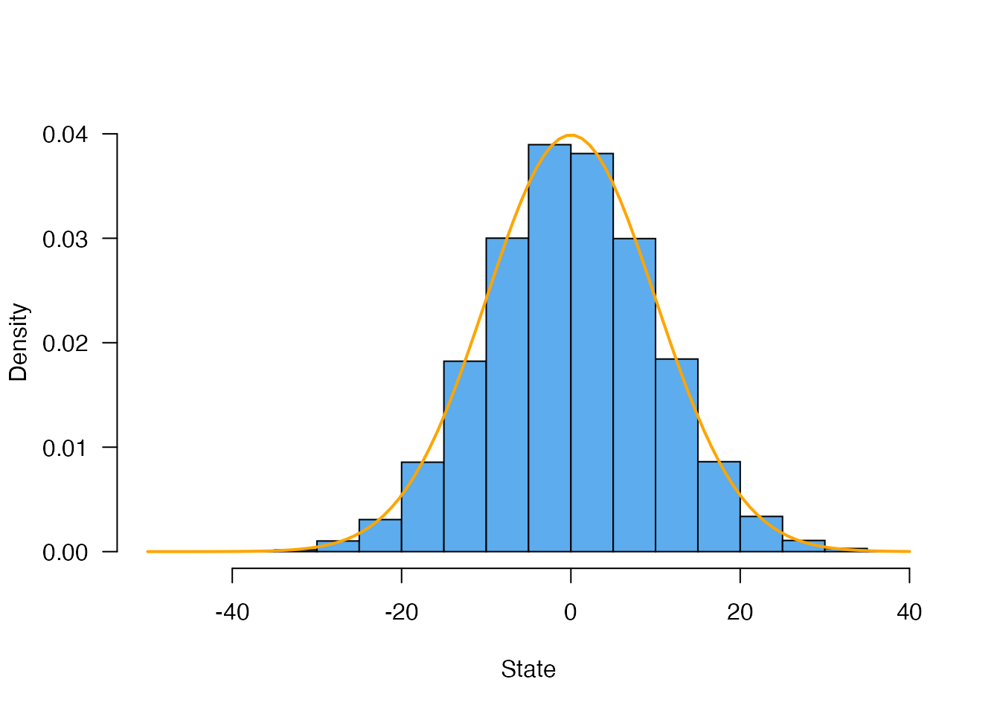
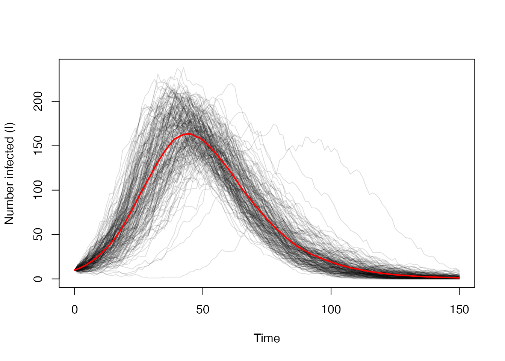
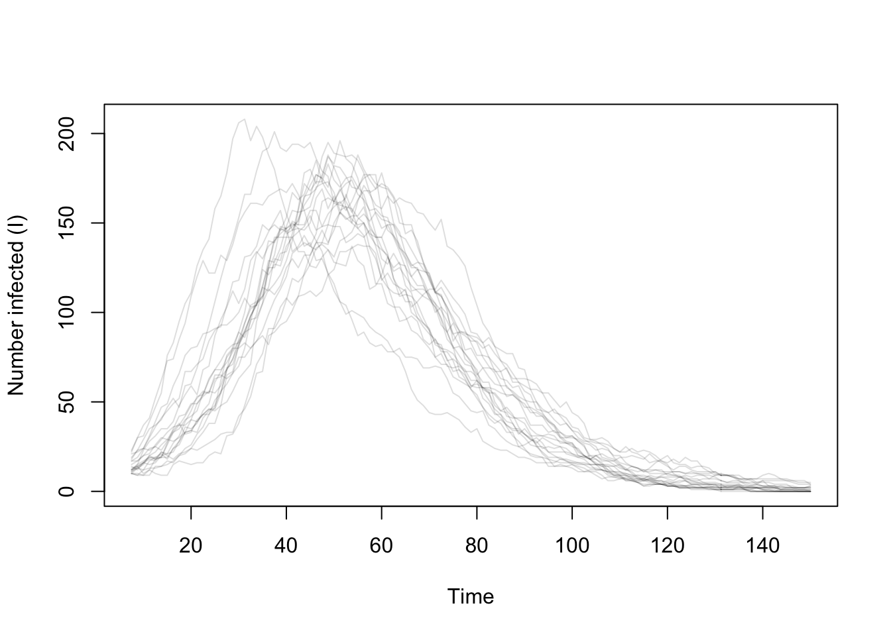
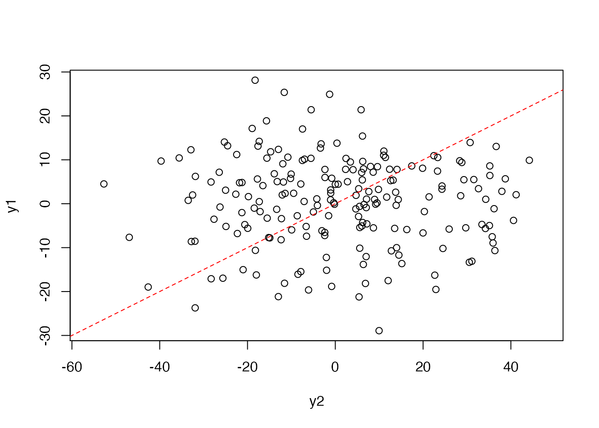
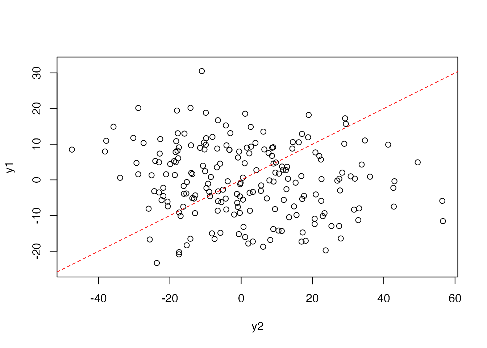

Stochastic models can be used in statistical inference via methods such as particle filtering but doing so requires that the models can be run over and over again very quickly. While R has excellent support for sampling from distributions, it is not necessarily well suited for this sort of problem because R is single threaded, so we are forced to evaluate realisations of the stochastic process in series (one after another) rather than in parallel.
The dust package provides tools to help write stochastic models that can be evaluated in parallel. It does not itself provide any statistical support such as particle filter; see the mcstate package for that. Instead, it focuses on providing:
vignette("rng") for details)Consider a unbiased random walk; at each time step we move our position with a draw from a normal distribution with mean 0 and some standard deviation. We consider a single individual moving but will eventually simulate a family of these individuals, each independent. All simulations have a sense of time - a unitless measure of time “step” will be used but it’s up to you how it is interpreted (step is a non-negative integer, implemented using size_t).
To implement this model in dust we write out a C++ file that looks like:
class walk {
public:
typedef double real_t;
typedef dust::no_data data_t;
typedef dust::no_internal internal_t;
struct shared_t {
real_t sd;
};
walk(const dust::pars_t<walk>& pars) : shared(pars.shared) {
}
size_t size() const {
return 1;
}
std::vector<real_t> initial(size_t step) {
std::vector<real_t> ret = {0};
return ret;
}
void update(size_t step, const real_t * state,
dust::rng_state_t<real_t>& rng_state,
real_t * state_next) {
real_t mean = state[0];
state_next[0] = dust::distr::rnorm(rng_state, mean, shared->sd);
}
private:
dust::shared_ptr<walk> shared;
};
#include <cpp11/list.hpp>
template <>
dust::pars_t<walk> dust_pars<walk>(cpp11::list pars) {
walk::real_t sd = cpp11::as_cpp<walk::real_t>(pars["sd"]);
return dust::pars_t<walk>(walk::shared_t{sd});
}There are two main parts here; the class (walk) and an interface function (dust_data).
The class is what does most of the work. It is important that this does not use anything in the R api as it may be called in parallel. Therefore use only C++ standard library types. It has to provide every public type or method as the example above:
real_t has to exist and indicate what sort of numeric type you use for “real numbers”. Typically this will be double,but if you need a different type (longer or shorter) you can use it here.data_t which for now should match exactly the construction typedef dust::no_data data_t until we stabilise and document this interfaceshared_t is whatever data your model needs that is shared across all particles, and unmodified during the model update (most likely parameters), and an object of this type will be passed to your constructor as the .shared field to pars (see dust_pars below)internal_t is whatever internal data your model needs (most likely scratch space used for intermediate calculations), and an object of this type will be passed to your constructor as the .internal field to pars (see dust_pars below)const dust::dust_pars<model>&. You can do what you want in the constructor - here we just copy shared (containing parameters) into the object with the pars argument (we use the private member shared here but this can be anything you want, though the type is important)size() must return the “size” of the system - how many state variables it has. Here we’re considering a single individual moving randomly so the size is always 1initial() returns the initial state of the model system. It must have length size() and it can vary based on the “step” of the systemupdate() is the core of the system and specifies how the state changes from one step to another. It will always have the signature as above with arguments size_t step (the current step), const double * state (a read-only copy of the state when entering this step), dust::rng_state_t<real_t>& rng (a reference to the random number state) and double * state_next (a reference to the state to be updated). Your method reads from state and writes to state_next. Here, we unpack the mean and draw a new normally distributed random number - note how the standard deviation is retrieved from the pars_ object.The function below the class is a template specialisation of a dust function dust_pars; it is used to create your dust::pars_t<model> object from an R list (cpp11::list). You can include cpp11.hpp (or more narrowly scoped cpp11 headers) at this point and can use any cpp11 function that you need. Avoid direct use of the R’s C API as this is not always safe to call from C++. In particular, use cpp11::stop() rather than Rf_error().
Here we retrieve the sd element of the list and convert it to a “real number” type. This roughly equivalent to writing
sd <- as.numeric(pars[["sd"]])in R, except that it will throw an error if sd is not present in the list pars. Then we construct the struct and return it.
The function dust::dust will “compile” a model for us to use:
path_walk <- system.file("examples/walk.cpp", package = "dust")
walk <- dust::dust(path_walk, quiet = TRUE)However, this is also bundled into the package and can be loaded with:
walk <- dust::dust_example("walk")The object itself is an “R6ClassGenerator” object:
walk
#> <dust> object generator
#> Public:
#> initialize: function (pars, step, n_particles, n_threads = 1L, seed = NULL,
#> name: function ()
#> param: function ()
#> run: function (step_end, device = FALSE)
#> simulate: function (step_end)
#> set_index: function (index)
#> index: function ()
#> n_threads: function ()
#> n_state: function ()
#> n_particles: function ()
#> n_particles_each: function ()
#> shape: function ()
#> set_state: function (state, step = NULL)
#> reset: function (pars, step)
#> set_pars: function (pars)
#> state: function (index = NULL)
#> step: function ()
#> reorder: function (index)
#> resample: function (weights)
#> info: function ()
#> pars: function ()
#> rng_state: function (first_only = FALSE)
#> set_rng_state: function (rng_state)
#> has_openmp: function ()
#> n_pars: function ()
#> set_n_threads: function (n_threads)
#> has_compare: function ()
#> set_data: function (data)
#> compare_data: function ()
#> filter: function (save_history = FALSE)
#> Private:
#> pars_: NULL
#> pars_multi_: NULL
#> index_: NULL
#> info_: NULL
#> n_threads_: NULL
#> n_particles_: NULL
#> n_particles_each_: NULL
#> shape_: NULL
#> ptr_: NULL
#> param_: NULL
#> Parent env: <environment: namespace:dust>
#> Locked objects: TRUE
#> Locked class: FALSE
#> Portable: TRUECreate an instance of the model using walk$new. There are three required arguments:
pars: passed to dust_pars to initialise the modelstep: the initial step (0 seems like a sensible choice here given our model has no internal sense of time)n_particles: the number of particles to create
model <- walk$new(list(sd = 1), 0, 20)
model
#> <dust>
#> Public:
#> compare_data: function ()
#> filter: function (save_history = FALSE)
#> has_compare: function ()
#> has_openmp: function ()
#> index: function ()
#> info: function ()
#> initialize: function (pars, step, n_particles, n_threads = 1L, seed = NULL,
#> n_pars: function ()
#> n_particles: function ()
#> n_particles_each: function ()
#> n_state: function ()
#> n_threads: function ()
#> name: function ()
#> param: function ()
#> pars: function ()
#> reorder: function (index)
#> resample: function (weights)
#> reset: function (pars, step)
#> rng_state: function (first_only = FALSE)
#> run: function (step_end, device = FALSE)
#> set_data: function (data)
#> set_index: function (index)
#> set_n_threads: function (n_threads)
#> set_pars: function (pars)
#> set_rng_state: function (rng_state)
#> set_state: function (state, step = NULL)
#> shape: function ()
#> simulate: function (step_end)
#> state: function (index = NULL)
#> step: function ()
#> Private:
#> index_: NULL
#> info_: NULL
#> n_particles_: 20
#> n_particles_each_: 20
#> n_threads_: 1
#> param_: NULL
#> pars_: list
#> pars_multi_: FALSE
#> ptr_: externalptr
#> shape_: 20This returns an R6 object that can be used to simulate from or interact with the model. For example, our initial model state is
model$state()
#> [,1] [,2] [,3] [,4] [,5] [,6] [,7] [,8] [,9] [,10] [,11] [,12] [,13] [,14]
#> [1,] 0 0 0 0 0 0 0 0 0 0 0 0 0 0
#> [,15] [,16] [,17] [,18] [,19] [,20]
#> [1,] 0 0 0 0 0 0and we can run the model for 100 steps, which returns the state at the end of the walk (and not at any intermediate steps):
model$run(100)
#> [,1] [,2] [,3] [,4] [,5] [,6] [,7] [,8]
#> [1,] -3.806942 -1.90541 -1.306242 0.8886696 20.2622 6.789156 -6.555904 2.77352
#> [,9] [,10] [,11] [,12] [,13] [,14] [,15]
#> [1,] 3.757806 1.835247 -7.710249 -3.311763 -8.732947 4.16423 -0.9062374
#> [,16] [,17] [,18] [,19] [,20]
#> [1,] -10.53114 -17.03238 -7.504202 9.65822 -9.849765We can also directly retrieve the state from our object
model$state()
#> [,1] [,2] [,3] [,4] [,5] [,6] [,7] [,8]
#> [1,] -3.806942 -1.90541 -1.306242 0.8886696 20.2622 6.789156 -6.555904 2.77352
#> [,9] [,10] [,11] [,12] [,13] [,14] [,15]
#> [1,] 3.757806 1.835247 -7.710249 -3.311763 -8.732947 4.16423 -0.9062374
#> [,16] [,17] [,18] [,19] [,20]
#> [1,] -10.53114 -17.03238 -7.504202 9.65822 -9.849765At this point our particles have been run for 100 steps with standard deviation 1 at each step so they will be distributed following Normal(0, 10). This is easier to see if we simulate a lot of particles:
model <- walk$new(list(sd = 1), 0, 20000)
invisible(model$run(100))
hist(model$state(), freq = FALSE, las = 1, col = "steelblue2", main = "",
ylim = c(0., 0.04), xlab = "State")
curve(dnorm(x, 0, 10), col = "orange", add = TRUE, lwd = 2)
The approach above still runs everything in serial, one particle after another. We can configure this system to run in parallel by providing the extra argument n_threads to the constructor.
Provided that your system can compile with openmp the following code will execute in parallel using 2 threads
model <- walk$new(list(sd = 1), 0, 20, n_threads = 2)
model$run(100)
#> [,1] [,2] [,3] [,4] [,5] [,6] [,7] [,8]
#> [1,] 8.09072 12.67561 -11.01736 8.804634 -21.16451 -12.93158 8.241796 -11.60167
#> [,9] [,10] [,11] [,12] [,13] [,14] [,15] [,16]
#> [1,] 12.12107 6.088329 0.2178461 10.23229 -9.290044 -1.618282 8.9804 -6.499543
#> [,17] [,18] [,19] [,20]
#> [1,] -8.921834 15.28778 1.288593 15.05728Running this same code in series will give the same results:
model <- walk$new(list(sd = 1), 0, 20, n_threads = 1)
model$run(100)
#> [,1] [,2] [,3] [,4] [,5] [,6] [,7]
#> [1,] 2.397862 -1.977347 -12.20683 -11.03278 10.98639 8.057195 -11.04416
#> [,8] [,9] [,10] [,11] [,12] [,13] [,14] [,15]
#> [1,] 4.378595 -0.762401 17.62545 8.475711 28.71686 -8.224771 3.307926 4.348528
#> [,16] [,17] [,18] [,19] [,20]
#> [1,] -6.677793 -15.97246 -7.99504 -3.0201 -14.36412We use as many random number generators as their are threads, so if you run fewer particles or more, increase the threads or decrease, the results will be the same.
Consider now an SIR model (Susceptible - Infected - Recovered). This sort of model is common in epidemiology, and is often extended to add additional compartments (e.g., SEIR which adds an Exposed compartment) or by structuring each compartment based on properties such as age. Here, we show a simple example with just 3 compartments:
class sir {
public:
typedef double real_t;
struct data_t {
real_t incidence;
};
typedef dust::no_internal internal_t;
struct shared_t {
real_t S0;
real_t I0;
real_t R0;
real_t beta;
real_t gamma;
real_t dt;
size_t freq;
// Observation parameters
real_t exp_noise;
};
sir(const dust::pars_t<sir>& pars) : shared(pars.shared) {
}
size_t size() const {
return 5;
}
std::vector<real_t> initial(size_t step) {
std::vector<real_t> ret = {shared->S0, shared->I0, shared->R0, 0, 0};
return ret;
}
void update(size_t step, const real_t * state,
dust::rng_state_t<real_t>& rng_state,
real_t * state_next) {
real_t S = state[0];
real_t I = state[1];
real_t R = state[2];
real_t cumulative_incidence = state[3];
real_t N = S + I + R;
real_t p_SI = 1 - std::exp(-(shared->beta) * I / N);
real_t p_IR = 1 - std::exp(-(shared->gamma));
real_t n_IR = dust::distr::rbinom(rng_state, I, p_IR * shared->dt);
real_t n_SI = dust::distr::rbinom(rng_state, S, p_SI * shared->dt);
state_next[0] = S - n_SI;
state_next[1] = I + n_SI - n_IR;
state_next[2] = R + n_IR;
state_next[3] = cumulative_incidence + n_SI;
// Little trick here to compute daily incidence by accumulating
// incidence from the first day.
state_next[4] = (step % shared->freq == 0) ? n_SI : state[4] + n_SI;
}
real_t compare_data(const real_t * state, const data_t& data,
dust::rng_state_t<real_t>& rng_state) {
const real_t incidence_modelled = state[4];
const real_t incidence_observed = data.incidence;
const real_t lambda = incidence_modelled +
dust::distr::rexp(rng_state, shared->exp_noise);
return dust::dpois(incidence_observed, lambda, true);
}
private:
dust::shared_ptr<sir> shared;
};
#include <cpp11/list.hpp>
// Helper function for accepting values with defaults
inline double with_default(double default_value, cpp11::sexp value) {
return value == R_NilValue ? default_value : cpp11::as_cpp<double>(value);
}
template <>
dust::pars_t<sir> dust_pars<sir>(cpp11::list pars) {
typedef sir::real_t real_t;
// Initial state values
// [[dust::param(I0, required = FALSE)]]
real_t I0 = with_default(10, pars["I0"]);
real_t S0 = 1000.0;
real_t R0 = 0.0;
// Rates, which can be set based on the provided pars
// [[dust::param(beta, required = FALSE)]]
real_t beta = with_default(0.2, pars["beta"]);
// [[dust::param(gamma, required = FALSE)]]
real_t gamma = with_default(0.1, pars["gamma"]);
// Time scaling
size_t freq = 4;
real_t dt = 1.0 / static_cast<real_t>(freq);
// Compare function
// [[dust::param(exp_noise, required = FALSE)]]
real_t exp_noise = with_default(1e6, pars["exp_noise"]);
sir::shared_t shared{S0, I0, R0, beta, gamma, dt, freq, exp_noise};
return dust::pars_t<sir>(shared);
}
template <>
cpp11::sexp dust_info<sir>(const dust::pars_t<sir>& pars) {
using namespace cpp11::literals;
// Information about state order
cpp11::writable::strings vars({"S", "I", "R", "cases_cumul", "cases_inc"});
// Information about parameter values
cpp11::list p = cpp11::writable::list({"beta"_nm = pars.shared->beta,
"gamma"_nm = pars.shared->gamma});
return cpp11::writable::list({"vars"_nm = vars, "pars"_nm = p});
}
// The way that this is going to work is we will process a list
// *outside* of the C that will take (say) a df and convert it
// row-wise into a list with elements `step` and `data`, we will pass
// that in here. Then this function will be called once per data
// element to create the struct that will be used for future work.
template <>
sir::data_t dust_data<sir>(cpp11::list data) {
return sir::data_t{cpp11::as_cpp<double>(data["incidence"])};
}There is not much different here to the version that is shown before for the walk model;
initial method is slightly more complicated as we initialise a 3-element vectorshared_t object has significantly more elementsdust_pars function is much more complicatedcompare_data method and a nontrivial data_t definition, but ignore these for nowThe other difference is a new template specialisation of dust_info - this is optional but can be used to report back to R information about the model based on the input parameters. Here it returns information about variable order and core parameters.
We also have added C++ pseudo-attributes with [[dust::param]] to describe the parameters that this function takes. This is optional, but allows use of a coef method with the class (see below).
As before, we’ll use the version bundled with the package
sir <- dust::dust_example("sir")To get infomation about the parameters, use coef() on the generator
coef(sir)The model is initialised the same way as before:
model <- sir$new(list(), 0, 20)We can use the $info() method to retrieve information about our model:
model$info()
#> $vars
#> [1] "S" "I" "R" "cases_cumul" "cases_inc"
#>
#> $pars
#> $pars$beta
#> [1] 0.2
#>
#> $pars$gamma
#> [1] 0.1and get its state as before:
model$state()
#> [,1] [,2] [,3] [,4] [,5] [,6] [,7] [,8] [,9] [,10] [,11] [,12] [,13] [,14]
#> [1,] 1000 1000 1000 1000 1000 1000 1000 1000 1000 1000 1000 1000 1000 1000
#> [2,] 10 10 10 10 10 10 10 10 10 10 10 10 10 10
#> [3,] 0 0 0 0 0 0 0 0 0 0 0 0 0 0
#> [4,] 0 0 0 0 0 0 0 0 0 0 0 0 0 0
#> [5,] 0 0 0 0 0 0 0 0 0 0 0 0 0 0
#> [,15] [,16] [,17] [,18] [,19] [,20]
#> [1,] 1000 1000 1000 1000 1000 1000
#> [2,] 10 10 10 10 10 10
#> [3,] 0 0 0 0 0 0
#> [4,] 0 0 0 0 0 0
#> [5,] 0 0 0 0 0 0Suppose that as we run the model we mostly want information on the “I” compartment. So we’ll run the model for a bit and retrieve the number of infected individuals, then continue, etc. To do this we use the $set_index() method to indicate which state elements should be returned after using $run():
model$set_index(2L)(you can pass any integer vector here, of any length, provided all the indices lie between 1 and the length of your state vector)
Now, when using run, the number of infected individuals is returned
model$run(10)
#> [,1] [,2] [,3] [,4] [,5] [,6] [,7] [,8] [,9] [,10] [,11] [,12] [,13] [,14]
#> [1,] 8 18 13 10 17 14 11 23 10 13 15 20 9 10
#> [,15] [,16] [,17] [,18] [,19] [,20]
#> [1,] 14 10 12 15 18 11
model$run(20)
#> [,1] [,2] [,3] [,4] [,5] [,6] [,7] [,8] [,9] [,10] [,11] [,12] [,13] [,14]
#> [1,] 8 28 18 17 26 22 11 33 12 19 14 22 14 15
#> [,15] [,16] [,17] [,18] [,19] [,20]
#> [1,] 27 13 16 24 20 16This is useful when you have many compartments or variables that you are not that interested in during running the model. For a particle filter you might be fitting to the sum of all infected individuals over a number of compartments, so rather than returning hundreds of values back (times hundreds of particles) you can return back much less data and keep things nice and fast.
If the index vector is named, then those names will be used as row names on the returned object:
model$set_index(c(I = 2L))
model$run(30)
#> [,1] [,2] [,3] [,4] [,5] [,6] [,7] [,8] [,9] [,10] [,11] [,12] [,13] [,14]
#> I 11 28 29 17 36 36 13 48 12 27 17 28 21 17
#> [,15] [,16] [,17] [,18] [,19] [,20]
#> I 38 18 25 30 26 24We can always use $state() to get the whole state vector:
model$state()
#> [,1] [,2] [,3] [,4] [,5] [,6] [,7] [,8] [,9] [,10] [,11] [,12] [,13] [,14]
#> [1,] 986 967 967 982 963 960 989 948 987 974 982 971 977 982
#> [2,] 11 28 29 17 36 36 13 48 12 27 17 28 21 17
#> [3,] 13 15 14 11 11 14 8 14 11 9 11 11 12 11
#> [4,] 14 33 33 18 37 40 11 52 13 26 18 29 23 18
#> [5,] 1 2 3 1 1 5 1 5 1 2 2 3 1 1
#> [,15] [,16] [,17] [,18] [,19] [,20]
#> [1,] 965 982 974 968 975 977
#> [2,] 38 18 25 30 26 24
#> [3,] 7 10 11 12 9 9
#> [4,] 35 18 26 32 25 23
#> [5,] 5 2 2 2 2 0or select only variables of interest:
model$state(c(S = 1L, R = 3L))
#> [,1] [,2] [,3] [,4] [,5] [,6] [,7] [,8] [,9] [,10] [,11] [,12] [,13] [,14]
#> S 986 967 967 982 963 960 989 948 987 974 982 971 977 982
#> R 13 15 14 11 11 14 8 14 11 9 11 11 12 11
#> [,15] [,16] [,17] [,18] [,19] [,20]
#> S 965 982 974 968 975 977
#> R 7 10 11 12 9 9Again, this copies names from the index if they are present.
In order to run the simulation beginning-to-end, we use dust::dust_iterate(); this function is purely a convenience function and the intention is that you would write your own (see mcstate for example).
model <- sir$new(list(), 0, 200)
steps <- seq(0, 600, by = 5)
state <- dust::dust_iterate(model, steps, 2L)
#> Warning: 'dust::dust_iterate' is deprecated.
#> Use '$simulate() method directly (see ?dust_simulate)' instead.
#> See help("Deprecated")The output here is a 1 x 200 x 121 matrix (n state x n particles x n steps) and we need to drop the first dimension and transpose the others for ease of plotting:
Plotting this over time (with 4 steps per day - see the sir code above)
time <- steps / 4
matplot(time, traces, type = "l", lty = 1, col = "#00000022",
xlab = "Time", ylab = "Number infected (I)")
lines(time, rowMeans(traces), col = "red", lwd = 2)
There are a few other methods on the walk objects that may be useful.
This method exists to support particle filtering, and allows resampling or reordering of particles.
model <- walk$new(list(sd = 1), 0, 20)
model$run(1)
#> [,1] [,2] [,3] [,4] [,5] [,6] [,7]
#> [1,] -0.3878415 0.40655 0.1373989 1.129785 -0.4704969 -0.3187958 -1.536471
#> [,8] [,9] [,10] [,11] [,12] [,13] [,14]
#> [1,] 0.06232296 -0.8748339 -2.149876 0.04529983 -0.4195323 0.9876213 -0.4435882
#> [,15] [,16] [,17] [,18] [,19] [,20]
#> [1,] 0.3233451 -0.2239685 0.5138257 0.2470888 -0.6651552 -0.7477044Suppose that we wanted to reorder these particles so that they were in decreasing order:
index <- order(model$state())
index
#> [1] 10 7 9 20 19 5 14 12 1 6 16 11 8 3 18 15 2 17 13 4We then pass this index to the reorder method:
model$reorder(index)
model$state()
#> [,1] [,2] [,3] [,4] [,5] [,6] [,7]
#> [1,] -2.149876 -1.536471 -0.8748339 -0.7477044 -0.6651552 -0.4704969 -0.4435882
#> [,8] [,9] [,10] [,11] [,12] [,13]
#> [1,] -0.4195323 -0.3878415 -0.3187958 -0.2239685 0.04529983 0.06232296
#> [,14] [,15] [,16] [,17] [,18] [,19] [,20]
#> [1,] 0.1373989 0.2470888 0.3233451 0.40655 0.5138257 0.9876213 1.129785We can then continue our random walk. There is no need to sample every particle and particles can appear multiple times in the sample, but the total number must be conserved. Suppose that we want to to sample particles based on how close they are to 0:
p <- dnorm(model$state())
index <- sample(length(p), replace = TRUE , prob = p)
index
#> [1] 15 13 15 19 13 12 18 9 6 14 15 11 13 19 9 4 9 10 10 11We can then apply this sampling:
model$reorder(index)
model$state()
#> [,1] [,2] [,3] [,4] [,5] [,6] [,7]
#> [1,] 0.2470888 0.06232296 0.2470888 0.9876213 0.06232296 0.04529983 0.5138257
#> [,8] [,9] [,10] [,11] [,12] [,13] [,14]
#> [1,] -0.3878415 -0.4704969 0.1373989 0.2470888 -0.2239685 0.06232296 0.9876213
#> [,15] [,16] [,17] [,18] [,19] [,20]
#> [1,] -0.3878415 -0.7477044 -0.3878415 -0.3187958 -0.3187958 -0.2239685This is not terribly useful on its own but is a key part of a particle filter.
By default every particle starts from the initial condition specified by your model classes initial() method. However, you can specify a state directly using the $set_state() method. Here, we initialise our SIR model with only 1 infected individual rather than 10:
model <- sir$new(list(), 0, 20)
model$set_state(c(1000, 1, 0, 0, 0))
model$state()
#> [,1] [,2] [,3] [,4] [,5] [,6] [,7] [,8] [,9] [,10] [,11] [,12] [,13] [,14]
#> [1,] 1000 1000 1000 1000 1000 1000 1000 1000 1000 1000 1000 1000 1000 1000
#> [2,] 1 1 1 1 1 1 1 1 1 1 1 1 1 1
#> [3,] 0 0 0 0 0 0 0 0 0 0 0 0 0 0
#> [4,] 0 0 0 0 0 0 0 0 0 0 0 0 0 0
#> [5,] 0 0 0 0 0 0 0 0 0 0 0 0 0 0
#> [,15] [,16] [,17] [,18] [,19] [,20]
#> [1,] 1000 1000 1000 1000 1000 1000
#> [2,] 1 1 1 1 1 1
#> [3,] 0 0 0 0 0 0
#> [4,] 0 0 0 0 0 0
#> [5,] 0 0 0 0 0 0Now, when we run the model, far more of the epidemics fail to take off as the infected individual goes disappears before infecting anyone.
steps <- seq(0, 600, by = 5)
state <- t(drop(dust::dust_iterate(model, steps, 2L)))
#> Warning: 'dust::dust_iterate' is deprecated.
#> Use '$simulate() method directly (see ?dust_simulate)' instead.
#> See help("Deprecated")
time <- steps / 4
matplot(time, state, type = "l", lty = 1, col = "#00000022",
xlab = "Time", ylab = "Number infected (I)")You can optionally set the initial step at the same time as the state. This is useful in two cases; if your model depends on time (e.g., you use the step in a calculation by transforming it into some measure of time) or if your particles start at different points. For example, suppose we start 10 individuals in the infected state but we do so with a number of possible starting points sampled from between step 0 and step 30:
step0 <- sample(0:30, 20, replace = TRUE)
model <- sir$new(list(), 0, 20)
model$set_state(c(1000, 10, 0, 0, 0), step0)After initialisation, our model is now at 30, the last step referenced in step0
model$step()
#> [1] 30and the initial states are a mix of states, despite having been seeded with the same 10 infected individuals, as different particles have run for different numbers of steps to reach this common time point:
model$state()
#> [,1] [,2] [,3] [,4] [,5] [,6] [,7] [,8] [,9] [,10] [,11] [,12] [,13] [,14]
#> [1,] 998 986 996 980 992 997 992 998 967 998 969 994 979 1000
#> [2,] 12 13 12 20 15 11 12 12 32 11 36 13 26 10
#> [3,] 0 11 2 10 3 2 6 0 11 1 5 3 5 0
#> [4,] 2 14 4 20 8 3 8 2 33 2 31 6 21 0
#> [5,] 2 0 2 2 1 3 1 2 2 2 4 0 2 0
#> [,15] [,16] [,17] [,18] [,19] [,20]
#> [1,] 988 985 987 994 991 1000
#> [2,] 20 21 17 15 14 10
#> [3,] 2 4 6 1 5 0
#> [4,] 12 15 13 6 9 0
#> [5,] 3 2 2 1 2 0From this point we can continue to run the simulation as before:
steps <- seq(max(step0), 600, by = 5)
state <- t(drop(dust::dust_iterate(model, steps, 2L)))
#> Warning: 'dust::dust_iterate' is deprecated.
#> Use '$simulate() method directly (see ?dust_simulate)' instead.
#> See help("Deprecated")
time <- steps / 4
matplot(time, state, type = "l", lty = 1, col = "#00000022",
xlab = "Time", ylab = "Number infected (I)")
You can also set the initial state to a range of different values. Suppose we set the initial number of infections to be poisson distributed with a mean of 10, we might write:
I0 <- rpois(20, 10)
state0 <- rbind(1010 - I0, I0, 0, 0, 0, deparse.level = 0)
model$set_state(state0, 0L)
model$step()
#> [1] 0
model$state()
#> [,1] [,2] [,3] [,4] [,5] [,6] [,7] [,8] [,9] [,10] [,11] [,12] [,13] [,14]
#> [1,] 998 1003 1005 1000 995 1000 1001 1003 995 997 996 1002 998 999
#> [2,] 12 7 5 10 15 10 9 7 15 13 14 8 12 11
#> [3,] 0 0 0 0 0 0 0 0 0 0 0 0 0 0
#> [4,] 0 0 0 0 0 0 0 0 0 0 0 0 0 0
#> [5,] 0 0 0 0 0 0 0 0 0 0 0 0 0 0
#> [,15] [,16] [,17] [,18] [,19] [,20]
#> [1,] 1003 998 999 1002 1005 1005
#> [2,] 7 12 11 8 5 5
#> [3,] 0 0 0 0 0 0
#> [4,] 0 0 0 0 0 0
#> [5,] 0 0 0 0 0 0Here, we have our variable initial state and all particles starting at step 0. You can combine the two approaches to have a variable initial state and variable initial time by running
model$set_state(state0, step0)
model$step()
#> [1] 30
model$state()
#> [,1] [,2] [,3] [,4] [,5] [,6] [,7] [,8] [,9] [,10] [,11] [,12] [,13] [,14]
#> [1,] 998 992 1003 989 973 997 990 1003 968 994 982 995 983 996
#> [2,] 10 11 7 14 25 12 17 6 28 16 23 14 16 13
#> [3,] 2 7 0 7 12 1 3 1 14 0 5 1 11 1
#> [4,] 0 11 2 11 22 3 11 0 27 3 14 7 15 3
#> [5,] 0 1 0 2 4 1 1 0 4 3 1 2 3 3
#> [,15] [,16] [,17] [,18] [,19] [,20]
#> [1,] 995 988 990 998 1002 1005
#> [2,] 12 16 17 10 4 5
#> [3,] 3 6 3 2 4 0
#> [4,] 8 10 9 4 3 0
#> [5,] 2 2 3 1 0 0A model can be “reset” rather than recreated. This is important in a simulation context because if you recreate the model you will reset the seed. So if you are performing stochastic realisations you should continue with your random number stream, not start again from the same seed.
To illustrate the problem, here is a naive simulation of a random walk, first simulating with a standard deviation of 1, then of 2, each time with 20 particles:
model <- walk$new(list(sd = 1), 0, 200)
y1 <- model$run(100)
model <- walk$new(list(sd = 2), 0, 200)
y2 <- model$run(100)
head(c(y1))
#> [1] 4.457455 -31.813780 -4.341399 -7.980255 5.746606 12.109792
head(c(y2))
#> [1] 7.654828 -17.723958 13.802298 -9.798215 15.993589 10.108105Everything looks reasonable until you plot the data:

because of the way normal random numbers are drawn, these are the same results, scaled!
Instead, we should use reset()
model <- walk$new(list(sd = 1), 0, 200)
y1 <- model$run(100)
model$reset(list(sd = 2), 0)
y2 <- model$run(100)
plot(y1 ~ y2, asp = 1)
abline(0, 0.5, col = "red", lty = 2)
You should not use dust::dust() within a package, because that would cause the model to compile each time you use it, rather than when the package builds. Instead you should use dust::dust_package() which will generate appropriate code for you.
To use dust in a package, put your dust models in inst/dust and run dust::dust_package() on the package’s root directory.
A skeleton package might contain:
#> .
#> ├── DESCRIPTION
#> ├── NAMESPACE
#> └── inst
#> └── dust
#> └── walk.cppThis is the normal R package skeleton, though missing R and src directories (for now). The DESCRIPTION file contains
Package: example
Title: Example Dust in a Package
Version: 0.0.1
LinkingTo: cpp11, dust
Authors@R: c(person('A', 'Person', role = c('aut', 'cre')
email = 'person@example.com'))
License: CC0The important things here are:
Package). We’re using example, and names with a dot may not work as expectedcpp11 and dust in LinkingTo, which allows package compilation to find their respective header filesThe files in inst/dust are the same files as seen above, with walk.cpp containing
class walk {
public:
typedef double real_t;
typedef dust::no_data data_t;
typedef dust::no_internal internal_t;
struct shared_t {
real_t sd;
};
walk(const dust::pars_t<walk>& pars) : shared(pars.shared) {
}
size_t size() const {
return 1;
}
std::vector<real_t> initial(size_t step) {
std::vector<real_t> ret = {0};
return ret;
}
void update(size_t step, const real_t * state,
dust::rng_state_t<real_t>& rng_state,
real_t * state_next) {
real_t mean = state[0];
state_next[0] = dust::distr::rnorm(rng_state, mean, shared->sd);
}
private:
dust::shared_ptr<walk> shared;
};
#include <cpp11/list.hpp>
template <>
dust::pars_t<walk> dust_pars<walk>(cpp11::list pars) {
walk::real_t sd = cpp11::as_cpp<walk::real_t>(pars["sd"]);
return dust::pars_t<walk>(walk::shared_t{sd});
}There can be as many of these files as you want.
To prepare the package, run dust::dust_package():
dust::dust_package(path)
#> ℹ 19 functions decorated with [[cpp11::register]]
#> ✔ generated file cpp11.R
#> ✔ generated file cpp11.cppThe directory structure now has more files:
#> .
#> ├── DESCRIPTION
#> ├── NAMESPACE
#> ├── R
#> │ ├── cpp11.R
#> │ └── dust.R
#> ├── inst
#> │ └── dust
#> │ └── walk.cpp
#> └── src
#> ├── Makevars
#> ├── cpp11.cpp
#> └── walk.cppThe file src/walk.cpp are generated by dust and should not be edited. They include your model, but also a bit of helper code:
// Generated by dust (version 0.7.13) - do not edit
#include <iostream>
#include <dust/dust.hpp>
#include <dust/interface.hpp>
class walk {
public:
typedef double real_t;
typedef dust::no_data data_t;
typedef dust::no_internal internal_t;
struct shared_t {
real_t sd;
};
walk(const dust::pars_t<walk>& pars) : shared(pars.shared) {
}
size_t size() const {
return 1;
}
std::vector<real_t> initial(size_t step) {
std::vector<real_t> ret = {0};
return ret;
}
void update(size_t step, const real_t * state,
dust::rng_state_t<real_t>& rng_state,
real_t * state_next) {
real_t mean = state[0];
state_next[0] = dust::distr::rnorm(rng_state, mean, shared->sd);
}
private:
dust::shared_ptr<walk> shared;
};
#include <cpp11/list.hpp>
template <>
dust::pars_t<walk> dust_pars<walk>(cpp11::list pars) {
walk::real_t sd = cpp11::as_cpp<walk::real_t>(pars["sd"]);
return dust::pars_t<walk>(walk::shared_t{sd});
}
[[cpp11::register]]
SEXP dust_walk_alloc(cpp11::list r_pars, bool pars_multi, size_t step,
cpp11::sexp r_n_particles, size_t n_threads,
cpp11::sexp r_seed) {
return dust_alloc<walk>(r_pars, pars_multi, step, r_n_particles,
n_threads, r_seed);
}
[[cpp11::register]]
SEXP dust_walk_run(SEXP ptr, size_t step_end, bool device) {
return dust_run<walk>(ptr, step_end, device);
}
[[cpp11::register]]
SEXP dust_walk_simulate(SEXP ptr, cpp11::sexp step_end) {
return dust_simulate<walk>(ptr, step_end);
}
[[cpp11::register]]
SEXP dust_walk_set_index(SEXP ptr, cpp11::sexp r_index) {
dust_set_index<walk>(ptr, r_index);
return R_NilValue;
}
[[cpp11::register]]
SEXP dust_walk_set_state(SEXP ptr, SEXP r_state, SEXP r_step) {
dust_set_state<walk>(ptr, r_state, r_step);
return R_NilValue;
}
[[cpp11::register]]
SEXP dust_walk_reset(SEXP ptr, cpp11::list r_pars, size_t step) {
return dust_reset<walk>(ptr, r_pars, step);
}
[[cpp11::register]]
SEXP dust_walk_state(SEXP ptr, SEXP r_index) {
return dust_state<walk>(ptr, r_index);
}
[[cpp11::register]]
size_t dust_walk_step(SEXP ptr) {
return dust_step<walk>(ptr);
}
[[cpp11::register]]
void dust_walk_reorder(SEXP ptr, cpp11::sexp r_index) {
return dust_reorder<walk>(ptr, r_index);
}
[[cpp11::register]]
SEXP dust_walk_resample(SEXP ptr, cpp11::doubles r_weights) {
return dust_resample<walk>(ptr, r_weights);
}
[[cpp11::register]]
SEXP dust_walk_set_pars(SEXP ptr, cpp11::list r_pars) {
return dust_set_pars<walk>(ptr, r_pars);
}
[[cpp11::register]]
SEXP dust_walk_rng_state(SEXP ptr, bool first_only) {
return dust_rng_state<walk>(ptr, first_only);
}
[[cpp11::register]]
SEXP dust_walk_set_rng_state(SEXP ptr, cpp11::raws rng_state) {
dust_set_rng_state<walk>(ptr, rng_state);
return R_NilValue;
}
[[cpp11::register]]
SEXP dust_walk_set_data(SEXP ptr, cpp11::list data) {
dust_set_data<walk>(ptr, data);
return R_NilValue;
}
[[cpp11::register]]
SEXP dust_walk_compare_data(SEXP ptr) {
return dust_compare_data<walk>(ptr);
}
[[cpp11::register]]
SEXP dust_walk_filter(SEXP ptr, bool save_history) {
return dust_filter<walk>(ptr, save_history);
}
[[cpp11::register]]
cpp11::sexp dust_walk_capabilities() {
return dust_capabilities<walk>();
}
[[cpp11::register]]
void dust_walk_set_n_threads(SEXP ptr, int n_threads) {
return dust_set_n_threads<walk>(ptr, n_threads);
}
[[cpp11::register]]
int dust_walk_n_state(SEXP ptr) {
return dust_n_state<walk>(ptr);
}The file R/dust.R contains the R interface generated by dust with the constructor objects (all models’ constructors will be collected into this file, which also should not be edited).
## Generated by dust (version 0.7.13) - do not edit
walk <- R6::R6Class(
"dust",
cloneable = FALSE,
private = list(
pars_ = NULL,
pars_multi_ = NULL,
index_ = NULL,
info_ = NULL,
n_threads_ = NULL,
n_particles_ = NULL,
n_particles_each_ = NULL,
shape_ = NULL,
ptr_ = NULL,
param_ = NULL
),
public = list(
initialize = function(pars, step, n_particles, n_threads = 1L,
seed = NULL, pars_multi = FALSE) {
res <- dust_walk_alloc(pars, pars_multi, step, n_particles,
n_threads, seed)
private$pars_ <- pars
private$pars_multi_ <- pars_multi
private$n_threads_ <- n_threads
private$ptr_ <- res[[1L]]
private$info_ <- res[[2L]]
private$shape_ <- res[[3L]]
private$n_particles_ <- prod(private$shape_)
if (pars_multi) {
private$n_particles_each_ <- private$n_particles_ / length(pars)
} else {
private$n_particles_each_ <- private$n_particles_
}
},
name = function() {
"walk"
},
param = function() {
private$param_
},
run = function(step_end, device = FALSE) {
m <- dust_walk_run(private$ptr_, step_end, device)
rownames(m) <- names(private$index_)
m
},
simulate = function(step_end) {
m <- dust_walk_simulate(private$ptr_, step_end)
rownames(m) <- names(private$index_)
m
},
set_index = function(index) {
dust_walk_set_index(private$ptr_, index)
private$index_ <- index
invisible()
},
index = function() {
private$index_
},
n_threads = function() {
private$n_threads_
},
n_state = function() {
dust_walk_n_state(private$ptr_)
},
n_particles = function() {
private$n_particles_
},
n_particles_each = function() {
private$n_particles_each_
},
shape = function() {
private$shape_
},
set_state = function(state, step = NULL) {
dust_walk_set_state(private$ptr_, state, step)
invisible()
},
reset = function(pars, step) {
private$info_ <- dust_walk_reset(private$ptr_, pars, step)
private$pars_ <- pars
invisible()
},
set_pars = function(pars) {
private$info_ <- dust_walk_set_pars(private$ptr_, pars)
private$pars_ <- pars
},
state = function(index = NULL) {
m <- dust_walk_state(private$ptr_, index)
rownames(m) <- names(index)
m
},
step = function() {
dust_walk_step(private$ptr_)
},
reorder = function(index) {
storage.mode(index) <- "integer"
dust_walk_reorder(private$ptr_, index)
invisible()
},
resample = function(weights) {
invisible(dust_walk_resample(private$ptr_, weights))
},
info = function() {
private$info_
},
pars = function() {
private$pars_
},
rng_state = function(first_only = FALSE) {
dust_walk_rng_state(private$ptr_, first_only)
},
set_rng_state = function(rng_state) {
dust_walk_set_rng_state(private$ptr_, rng_state)
invisible()
},
has_openmp = function() {
dust_walk_capabilities()[["openmp"]]
},
n_pars = function() {
if (private$pars_multi_) length(private$pars_) else 0L
},
set_n_threads = function(n_threads) {
prev <- private$n_threads_
dust_walk_set_n_threads(private$ptr_, n_threads)
private$n_threads_ <- n_threads
invisible(prev)
},
has_compare = function() {
dust_walk_capabilities()[["compare"]]
},
set_data = function(data) {
dust_walk_set_data(private$ptr_, data)
},
compare_data = function() {
dust_walk_compare_data(private$ptr_)
},
filter = function(save_history = FALSE) {
dust_walk_filter(private$ptr_, save_history)
}
))
class(walk) <- c("dust_generator", class(walk))Finally, R/cpp11.R and src/cpp11.cpp are files created by cpp11 that should not be edited.
Your package can include as much R code as you want, and can be developed like any other R package. But any time you change the code in inst/dust you should rerun dust::dust_package().